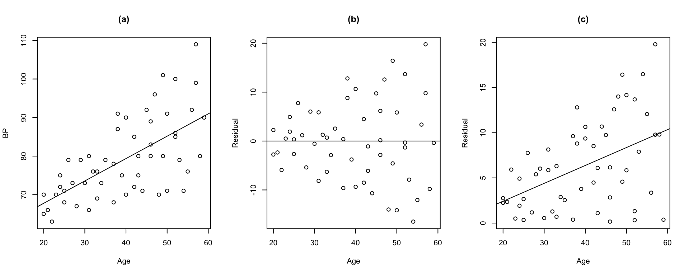

6/4/2020
The generalized multiple regression model:
\[Y_i = \beta_0 + \beta_1X_{i1} + \dots + \beta_{p-1}X_{i, p-1} + \epsilon_i\] where,
\[Var(\epsilon) = \begin{bmatrix}\sigma_1^2 & 0 & \dots & 0 \\ 0 & \sigma_2^2 & \dots & 0 \\ \vdots & \vdots & & \vdots \\ 0 & 0 & \dots & \sigma_n^2\end{bmatrix}\]
Likelihood
\[L(\beta) = \prod\limits_{i=1}^n \frac{1}{\sqrt{2\pi\sigma_i^2}} \exp \left[ -\frac{1}{2\sigma_i^2} (Y_i -\beta_0 - \beta_1X_{i1} -\dots - \beta_{p-1}X_{i, p-1})^2\right]\]
Define \[w_i = \frac{1}{\sigma_i^2}\]
\[L(\beta) = \left[\prod\limits_{i=1}^n \frac{\sqrt{w_i}}{\sqrt{2\pi}}\right] \exp \left[ -\frac{1}{2} \sum\limits_{i=1}^n w_i(Y_i -\beta_0 - \beta_1X_{i1} -\dots - \beta_{p-1}X_{i, p-1})^2\right]\] Minimize
\[Q_w = \sum\limits_{i=1}^n w_i(Y_i -\beta_0 - \beta_1X_{i1} -\dots - \beta_{p-1}X_{i, p-1})^2\] ## Intuition
\[W = \begin{bmatrix}w_1 & 0 & \dots & 0 \\ 0 & w_2 & \dots & 0 \\ \vdots & \vdots & & \vdots \\ 0 & 0 & \dots & w_n\end{bmatrix}\]
Normal Equation
\[(X^TWX)\hat{\beta}_w = X^TWY\]
Estimators
\[\hat{\beta}_w = (X^TWX)^{-1}X^TWY\]
Variance of the estimators
\[Var(\hat{\beta}_w = (X^TWX)^{-1}\]
A residual plot against \(X_l\) exhibits a megaphone shape. \(\Rightarrow\) Regress the absolute residuals against \(X_l\)
A residual plot against \(\hat{Y}\) exhibits a megaphone shape. \(\Rightarrow\) Regress the absolute residuals against \(\hat{Y}\)
A plot of the squared residuals against \(X_l\) exhibits an upward tendency. \(\Rightarrow\) Regress the squared residuals against \(X_l\)
A plot of the squared residuals against \(X_l\) suggests that the variance increases rapidly with increases in \(X_l\) up to a point and then increases more slowly. \(\Rightarrow\) Regress the absolute residuals against \(X_l\) and \(X_l^2\).
After the variance function or the standard deviation function is estimated, the fitted values from this function are used to obtain the estimated weights:
\[w_i = \frac{1}{\hat{s}_i^2}\quad \text{ where } \hat{s}_i \text{ is fitted value from standard deviation function}\] \[w_i = \frac{1}{\hat{v}_i}\quad \text{ where } \hat{v}_i \text{ is fitted value from variance function}\]
The parameters are then estiamted as
\[\hat{\beta}_w = (X^TWX)^{-1}X^TWY\]
In designed experiments \(\sigma_i^2\) is estimated suing replicate observations at each combination of levels of the predictor variables.
In observation studies, near replicates many be used.
For example, if the residual plot against \(X_l\) shows a megaphone appearance, cases with \(X_1\) values can be grouped together and the variance of the residuals in each group calculated.
## ## Call: ## lm(formula = y ~ x, data = alr4::physics, weights = 1/SD^2) ## ## Weighted Residuals: ## Min 1Q Median 3Q Max ## -2.3230 -0.8842 0.0000 1.3900 2.3353 ## ## Coefficients: ## Estimate Std. Error t value Pr(>|t|) ## (Intercept) 148.473 8.079 18.38 7.91e-08 *** ## x 530.835 47.550 11.16 3.71e-06 *** ## --- ## Signif. codes: 0 '***' 0.001 '**' 0.01 '*' 0.05 '.' 0.1 ' ' 1 ## ## Residual standard error: 1.657 on 8 degrees of freedom ## Multiple R-squared: 0.9397, Adjusted R-squared: 0.9321 ## F-statistic: 124.6 on 1 and 8 DF, p-value: 3.71e-06
plot(blood$Age, abs(lmod$residuals), xlab = 'Age', ylab = 'Residual', main = '(c)')

Age## Estimate Std. Error t value Pr(>|t|) ## (Intercept) -1.54948 2.18692 -0.7085 0.4817858 ## blood$Age 0.19817 0.05309 3.7328 0.0004705 ## ## n = 54, p = 2, Residual SE = 4.46057, R-Squared = 0.21
\[\hat{s} = -1.5494776 + 0.1981723 Age\]
w = 1/lmod_abs_res$fitted.values^2 head(w)
## 1 2 3 4 5 6 ## 0.06920928 0.14655708 0.12661657 0.09725115 0.08625993 0.11048521
head(blood$Age)
## [1] 27 21 22 24 25 23
## Estimate Std. Error t value Pr(>|t|) ## (Intercept) 56.156929 3.993674 14.0615 < 2.2e-16 ## Age 0.580031 0.096951 5.9827 2.05e-07 ## ## n = 54, p = 2, Residual SE = 8.14575, R-Squared = 0.41
wls_mod = lm(BP ~ Age, weights = w, data = blood) sumary(wls_mod)
## Estimate Std. Error t value Pr(>|t|) ## (Intercept) 55.565766 2.520918 22.042 < 2.2e-16 ## Age 0.596342 0.079238 7.526 7.187e-10 ## ## n = 54, p = 2, Residual SE = 1.21302, R-Squared = 0.52